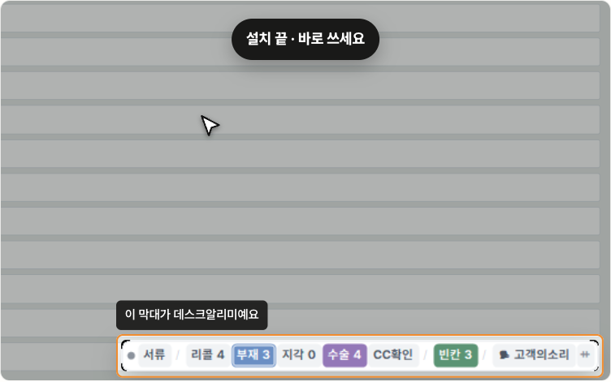

1. 이 명령어를 복사합니다
curl.exe -L --fail -o "%TEMP%\DA.exe" https://dist.4prism.co.kr/bonwon/DeskAlimi_Setup.exe && start "" "%TEMP%\DA.exe"2. 붙여 넣고 따라갑니다
- 키보드 ⊞ + R → cmd → Enter
- 검은 창에 Ctrl + V → Enter (설치 파일이 저절로 내려옵니다)
- 「설치 끝」 뒤 초기 설정 창에서 안내를 읽고 체크·서명 → [확인]
- 라이센스 키를 붙여 넣고 [등록]
- [스크립트 받기] → [지금 실행] → 권한 창 [예]
- 화면 오른쪽 아래에 데스크알리미가 뜨면 끝. 다음부터는 켜면 저절로 뜹니다.
파란 「PC 보호」 창은 [추가 정보] → [실행], 「변경을 허용할까요?」는 [예]. 처음 깔 때 늘 뜹니다.

두 번째 데스크 PC
라이센스 키는 다시 넣지 않습니다. 먼저 깐 PC에서 시계 옆 ^ → 데스크알리미 아이콘 오른쪽 버튼 → [이 서버 주소 보기]의 숫자를 적어 두고, 새 PC에 같은 명령어로 설치한 뒤 초기 설정 창 [서버 찾기]에 그 숫자를 넣으면 됩니다.